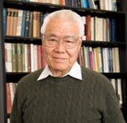

2013 Lee Teng Summer Internship Program
This page has program details for the 2013
Lee Teng Undergraduate Internship in Accelerator Science and Engineering
.
List of projects and mentors
Program calendar
Presentations and papers
Progress reports and outlines
, July 19, 2013, Argonne
Final presentations and papers
, August 8, 2013, Fermilab
Pictures
Fermilab visit
Argonne visit
Lots of pictures from the summer courtesy of Reynier Cruz Torres
(
Last updated 8/9/2013 by
Eric Prebys
)